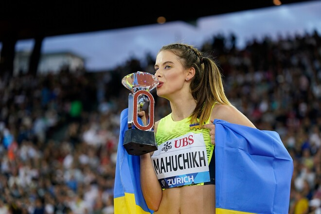
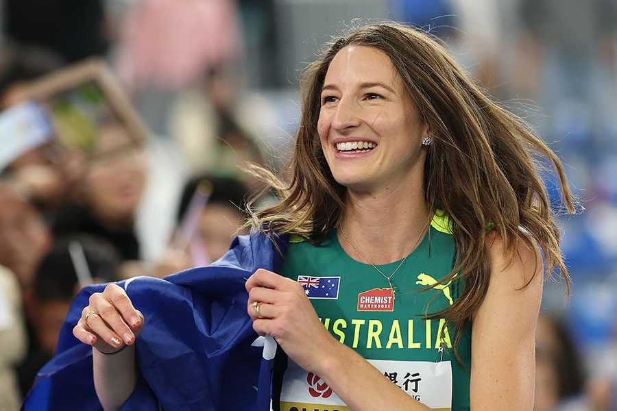
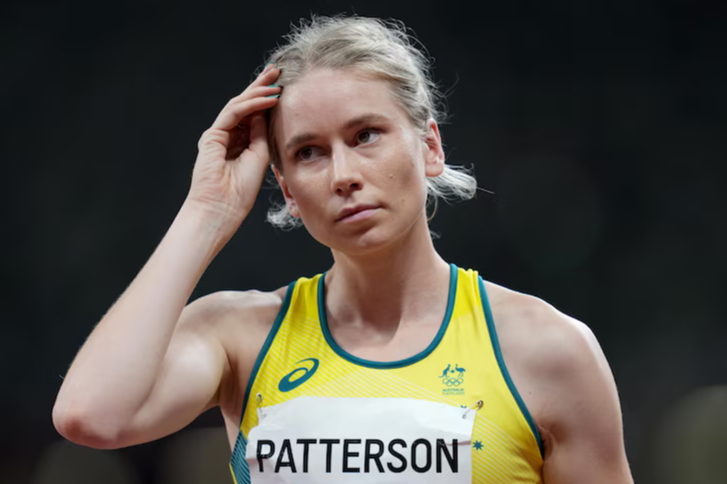
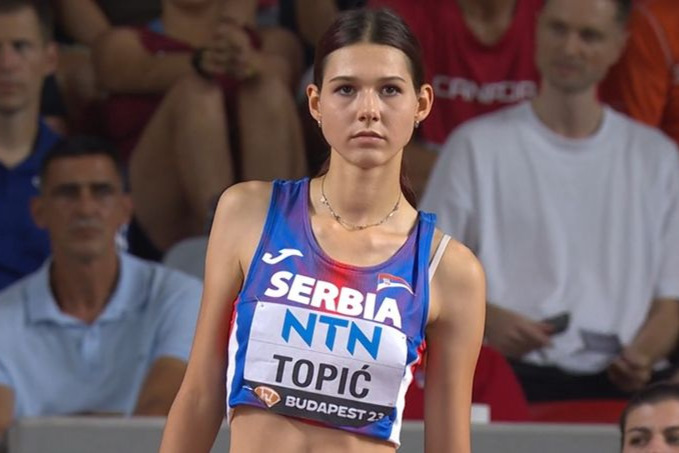
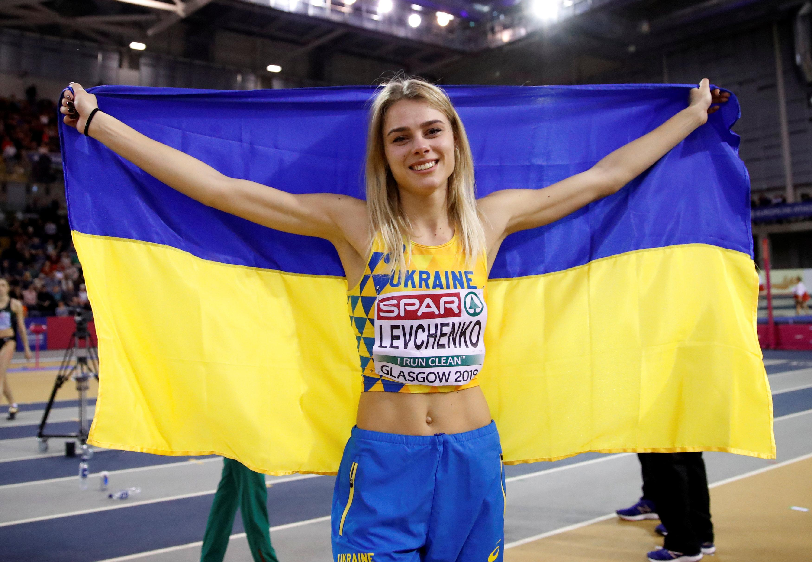

У жіночих стрибках у висоту в Diamond League виступають багато сильних спортсменок. Але погляньмо на тих,
хто
найчастіше бореться за перемогу на етапах Діамантової Ліги та на чемпіонатах світу.


Австралійська легкоатлетка, спеціалістка зі стрибків у висоту, одна з провідних спортсменок світу в цій дисципліні. Вона представляє Австралію на міжнародних змаганнях уже багато років і постійно демонструє високі результати у стрибках у висоту. Оліслагерс неодноразово конкурувала з провідними стрибунками світу, включно з українською чемпіонкою Ярославою Магучіх На її рахунку — численні перемоги на міжнародних турнірах. Зокрема вона вигравала фінали «Діамантової ліги» зі стрибків у висоту, встановивши особистий результат 2,04 м, що стало найкращим у її кар’єрі на цьому турнірі.

Австралійська легкоатлетка, яка спеціалізується на стрибках у висоту і входить до числа провідних
спортсменок
світу в цій дисципліні.
Паттерсон встановила рекорди Австралії як в приміщенні, так і на відкритому повітрі, регулярно бере
участь у
найпрестижніших міжнародних турнірах і змаганнях серії Діамантової Ліги.
У березні 2022 року на чемпіонаті світу з бігу 2022 року в Белграді Паттерсон
встановила
новий
рекорд
Океанії в приміщенні, стрибнувши на 2,00 м та вигравши срібну медаль.

Сербська легкоатлетка, яка спеціалізується на стрибках у висоту і є однією з найяскравіших молодих зірок світової легкої атлетики. Топіч стала наступницею сімейної легкоатлетичної традиції — її батько, Драґутин Топіч, був чемпіоном Європи у стрибках у висоту, а мати, Більяна Топіч, — рекордсменкою Сербії в потрійному стрибку. У 2022 році вона виграла бронзову медаль на чемпіонаті Європи, ставши наймолодшою призеркою змагань, і здобула бронзу на юніорському чемпіонаті світу. Згодом вона виборола срібну медаль на Європейському чемпіонаті 2024 року, а в 2025 році стала бронзовою призеркою чемпіонату світу.

Українська легкоатлетка, стрибунка у висоту, одна з провідних спортсменок країни Юлія неодноразово ставала чемпіонкою та призеркою чемпіонатів Європи, брала участь у серії Diamond League, де демонструвала стабільно високі результати та боротьбу за медалі. Її особистий рекорд у стрибках у висоту на відкритому повітрі становить 2,02 м, а в приміщенні — 2,01 м, що робить її однією з найкращих українських легкоатлеток в історії.